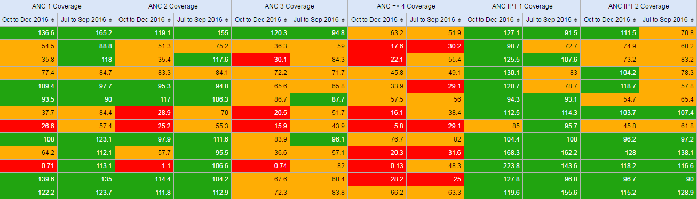
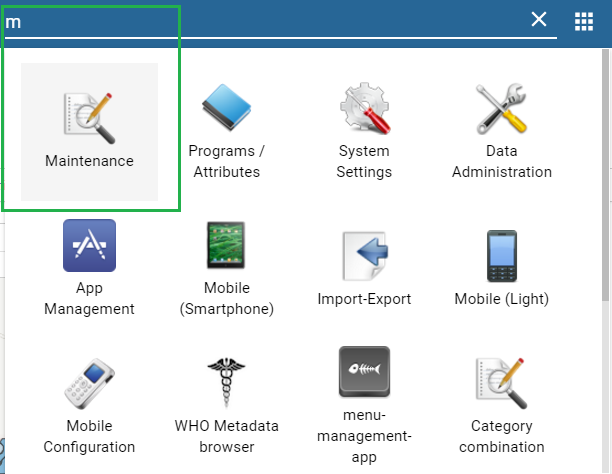
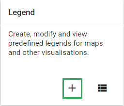
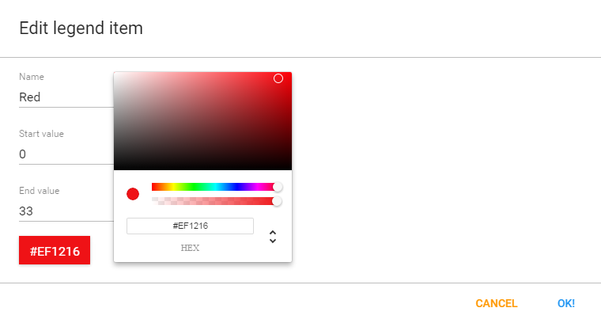
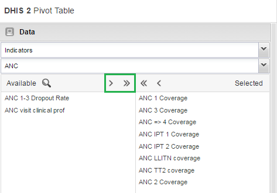
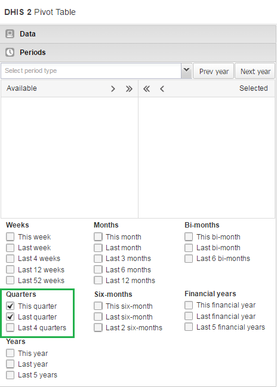
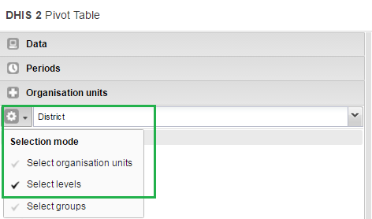
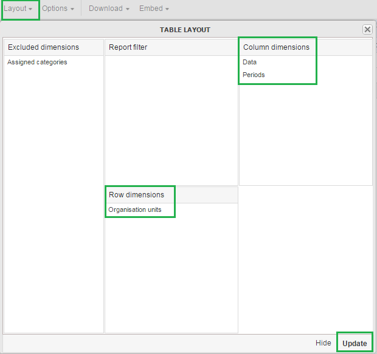
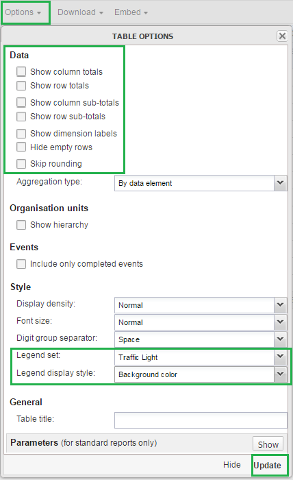

Scorecards definition: In public health settings such as Ministries of Health, scorecards offer a useful and standardized method for combining related indicators into one table. A scorecard gives an overall view of the performance of a health program such as a vaccination program, highlighting successes, weaknesses, and areas for improvement Here's what a typical scorecard looks like:
|  |
This tutorial explains how to create a scorecard in the DHIS2 Pivot Table app. There are several advantages to using the Pivot Table to create a scorecard, such as:
-
You can save the scorecard on the dashboard and use it offline.
-
You can share the scorecard with other DHIS2 users.
Let's get started!
First, we’ll create a 3-color “traffic light” legend for the scorecard. With three basic colors, the scorecard is easy to scan and easy to understand.
-
Open the Maintenance app. Click the menu in the top right corner and select Maintenance from the list of apps. You can also type the first letters of the word maintenance in the search field to find the app.
 -
In the Maintenance app, scroll to the bottom of the page right down to the Other section.
-
Go to Legend and click the +.
 -
In the Legend Management page, scroll to the bottom of the page and create a new legend by clicking the blue + button.

-
Enter a name for the legend such as “Traffic light”, a start value and an end value in the fields. The values you enter here depend on the performance ratings you wish to set for the scorecard.
-
Change Number of legend items to 3 to display three colors in the scorecard. To change the legend item colors, click the blue + button and then edit the colors.

-
Open the Pivot Table app from the top right menu of the dashboard. You can also enter the first letters of Pivot Table in the search field.
-
Go to Data in the pane on the left side and select Indicators in the list.
-
Select an Indicator group such as “ANC” in the second list.
-
Using the arrows, select the type of indicators you want to see in your scorecard.
 -
Click Update. This button is in the menu at the top of the workspace
-
Go to Periods and select a period for which you want to display data. In this “traffic light” example, we’ll use the relative period section. In Quarters, select This quarter and Last quarter. Clear any other checkboxes and click Update.
 -
Go to Organisation Units in the same left side pane, and click the arrow next to the gear button.
-
Select Select levels.
 -
Select District from the list (next to the gear button). Click Update.

As you can see, the scorecard is starting to take shape in the workspace. Now it’s time to fine-tune the look and feel.
-
In the workspace, click Layout.
 -
In Table layout, drag Organisation units down to the Row dimensions section.
-
Drag Data to the Column dimensions section.
-
In the Column dimensions pane, drag Periods below Data, and click Update.
-
In the workspace, click Options.
 -
Go to Data and clear all the checkboxes.
-
Go to Style > Legend set and from the list, select the legend you created in the Maintenance app. In this example, we called it Traffic light.
-
Go to Style > Legend display style and select Background color.
-
Click Update.
The Scorecard is ready!